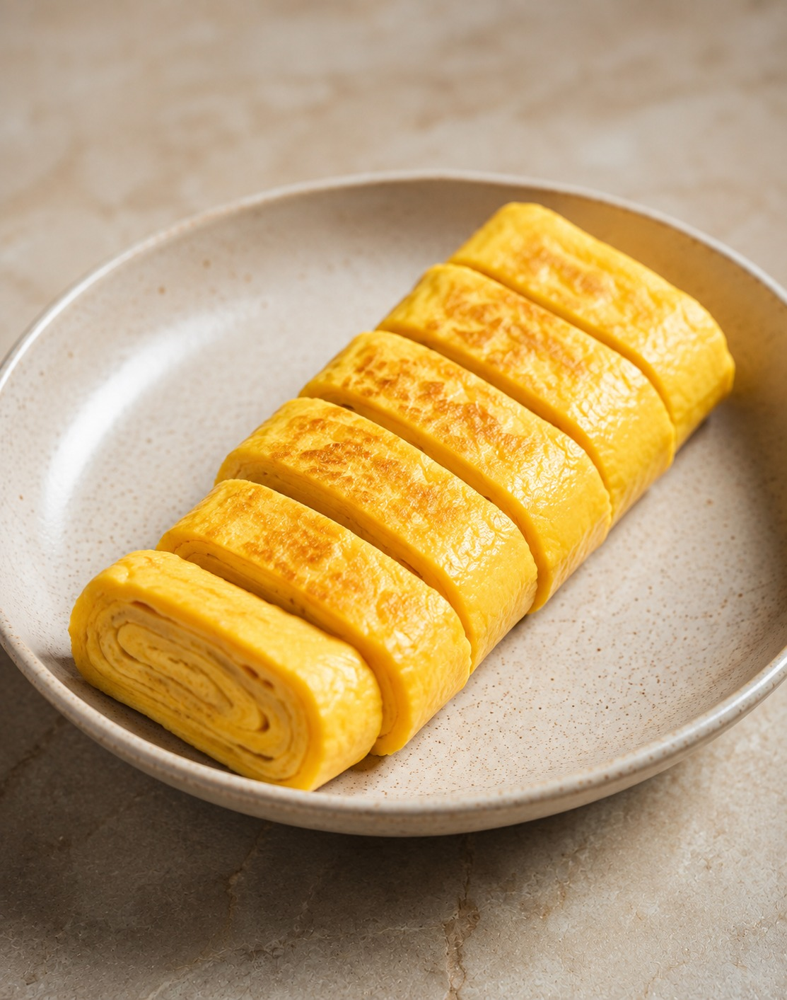

Défi tamagoyaki · ouverture le 1er décembre
À toi de rouler le tamagoyaki
Prépare une omelette japonaise roulée, puis imagine ta propre variation. Trois recettes finalistes seront reproduites par Aiko.
Cuisiner le tamagoyaki
La recette de base
Ingrédients
- 5 œufs
- 2 cuillères à soupe de dashi ou d’eau
- 1 cuillère à soupe de sucre
- 1 cuillère à café de sauce soja claire
- 1 pincée de sel
- Un peu d’huile neutre
Préparation
- Bats les œufs, puis ajoute le dashi ou l’eau, le sucre, la sauce soja et le sel. Mélange juste assez pour les dissoudre.
- Chauffe une poêle à feu moyen et huile-la légèrement avec un papier absorbant.
- Verse une fine couche d’œuf. Lorsqu’elle commence à prendre, roule-la vers un bord de la poêle. Si elle dore trop vite, baisse le feu.
- Pousse le rouleau vers le bord opposé, huile la poêle et ajoute une couche d’œuf en soulevant le rouleau pour que le liquide coule dessous.
- Enroule la nouvelle couche autour du rouleau et répète jusqu’à épuisement des œufs. Une natte à sushis peut aider à régulariser la forme.
- Laisse refroidir, puis tranche l’omelette en portions régulières.
Proposer ta variation
La candidature sera gratuite et se fera par e-mail à umaiya.app@gmail.com du 1er au 24 décembre 2026. Elle sera réservée aux personnes majeures résidant en France métropolitaine, Corse comprise, ou dans un DROM.
Lire le règlement version 1.0, la notice de confidentialité du défi et les conditions du lot avant de préparer le message.
Indique ton prénom ou pseudonyme, confirme ta majorité et ta résidence dans le territoire prévu, puis joins le titre, les ingrédients quantifiés, les étapes, une brève description de la variation et une photo originale du plat. Signale les allergènes de tous les ingrédients, y compris les produits composés, et les mentions de traces figurant sur les étiquettes.
Voir le modèle d’e-mail
Objet proposé Défi tamagoyaki — [titre de ma recette]
Ajoute ta photo en pièce jointe. Indique les allergènes de la recette sans transmettre d’informations médicales personnelles.
Les candidatures ne sont pas ouvertes. Attends l’ouverture avant d’envoyer ton e-mail.
Le vote des finalistes
Tu pourras découvrir les trois recettes reproduites par Aiko. Le vote du public, envoyé avec Google Forms, comptera pour 60 % et la note de dégustation de SITHAKOUL Sing, organisateur et seul évaluateur, pour 40 %.
La recette du lauréat sera créditée dans UMAIYA Cuisine à partir de février 2027, au plus tard le 31 mars 2027, et restera accessible gratuitement pendant douze mois après sa publication effective. Une vidéo de présentation sera publiée au plus tard le 15 avril 2027. Ces échéances figurent dans le règlement version 1.0 et les conditions du lot.
Quand les trois fiches seront publiées, tu pourras suivre le lien du formulaire Google, saisir ton adresse e-mail, choisir une recette et envoyer ton vote gratuitement. Un compte Google ne sera pas nécessaire. L’adresse saisie sera utilisée pour rapprocher les réponses répétées.
- Lis les trois fiches et choisis l’identifiant d’une recette.
- Ouvre le lien Google Forms et saisis ton adresse e-mail.
- Choisis une seule recette, puis envoie ton vote.
Le vote est fermé. Les identifiants, les fiches et les consignes définitives seront affichés après validation par les finalistes.